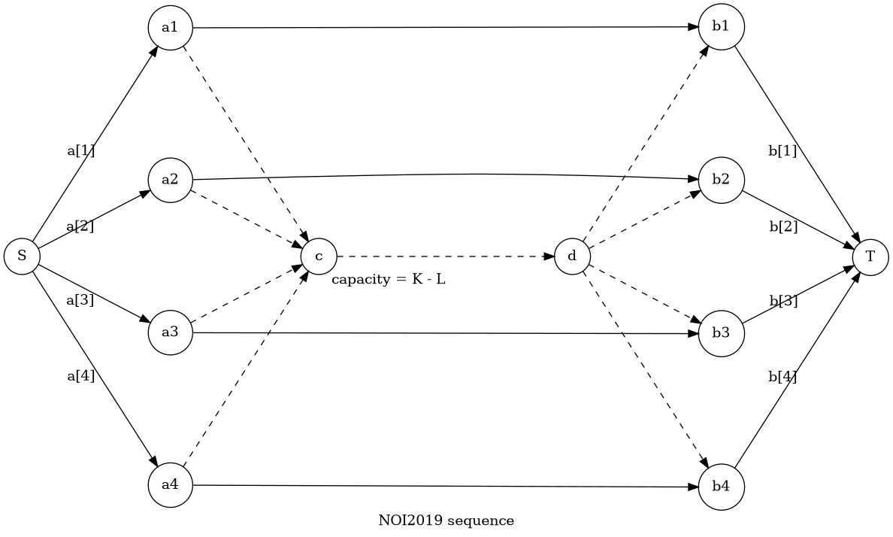

2021 五月训练日志
PKUSC2018 PKUSC
PKUSC 计算几何 圆
暴力。把多边形拆成有向边，问题转化为计算一个线段与圆的交（交集是线段）。这个可以做一个类似区别交的东西（这里的区间长度定义为是端点的辐角差）。
时间复杂度。
细节不多。见代码。
NOI2019 回家路线
NOI 斜率优化 李超树 DAG
首先，小猫走的路径是没有环的（时间不能倒流）。因此实质上本题的图是一个 DAG。
更具体地说，我们用二元组表示「在时刻到达结点」。将题面中的模型转化为点集为的图，就是一个 DAG。问题转化为求 DAG 上从到的最小代价。
本题的代价是与等待时间的连续段有关的，难以均摊到每条边上。换句话说，你没法最短路，除非你暴力建条边。不过注意到每次等待只会发生在单个结点上。因此我们将视角切换到一个结点上。则在这个结点上按照时间顺序会有两种事件：列车到站和列车出发。
因此我们考虑在时刻到达，花费的最小代价设为，而时刻有另一列车从出发（）于时刻到达。则到达的代价更新为
这是一个典型的斜率优化转移。
在实现的时候我们需要开个队列（数组）。
时间复杂度，如果使用线性的排序方式可以做到。
注：斜率优化维护下凸壳时，在插入点的时候，对于横坐标相等的情况要特判：
#define check(X, Y, Z) (Y.x == Z.x ? (Y.y < Z.y) : (det(Vec(X, Y), Vec(Y, Z)) > 0))NOI2019 序列
NOI 模拟费用流 贪心
首先容易想到一个费用流做法，建模类似这样

虚线部分表示选择不一定匹配的两个。
写得好应该可以获得分。
满分做法是考虑优化计算费用流的过程。也就是说我们不使用常规的费用流算法，而是根据本题中费用流模型的特殊结构，设计算法模拟费用流的过程。
就本题而言我们模拟増广路算法。増广路算法的特征是每次找费用的最短路，也就是贪心。
观察发现，每次増广相当于是左边选了一个右边选了一个。中间怎么流我们其实不关心，因为没有费用，只有一个限制：满足这条边的容量限制。因此我们的问题可以抽象为一个贪心选数的问题。
如果这条边没有满流，那么増广过程等价于贪心选择的最大值和的最大值，直到满流。
如果满流，那么我们有三种増广路（选数）类型：
- 选择两个相匹配的数，且这两个数之前没有被选过。
- 对于其中被选，未选。那么我们选上，含义是给一个的流，踢掉原本的流。这时的入流少了，那么我们再从未选的中贪心拿最大的即可。
- 对于其中未选，被选的情况同理。
种情况取最优即可。
容易发现上述増广过程可以数据结构简单维护。
时间复杂度。
NOI2019 弹跳
NOI K-D Tree 最短路
看起来是个单源最短路。由于边权非负，容易想到 Dijkstra 算法。
但是直接建图边数太多，如果使用二维线段树或者树套树优化建图会使得复杂度达到的量级，而且还容易被卡空间。
因此我们考虑优化算法过程。基本的 Dijkstra 算法中我们维护一个小根堆，堆中存放形如的二元组，表示到达的最短距离是。
由于本题中连出的边是一个矩形的范围，因此容易想到将二元组魔改成，表示到达矩阵中还未被访问（入堆）的点的最短距离是。因为 Dijkstra 算法中每个点只会被访问一次，因此中已经被访问过的点的最短路距离一定小于等于，所以我们可以不考虑这些点。
因此问题转化为：如何寻找一个矩阵中未被访问过的点。这个可以树套树或者 K-D Tree。K-D Tree 空间更小。每次我们找到一个点后将其入堆，然后把它标记为已访问过。如果 K-D Tree 上某个结点代表的矩阵内的所有结点都被访问过了，就没必要遍历这个子树了。
K-D Tree 定位单个点的复杂度是的，而每个点最多被定位一次。因此总复杂度。
NOI2019 斗主地
插值 数学 猜结论
一句话：一次函数洗牌之后的期望还是一次函数，二次函数洗牌之后的期望还是二次函数。
这个结论并没有那么好猜。证明的话可以从一次函数的角度，写一个归纳法，发现可以拆成若干个范德蒙德恒等式的和。二次函数可以差分成一个一次函数来理解。
其实有另外一种更意识流的理解：洗牌本质上是把这个函数分成前后两段，然后均匀地混合在一起。所以一次函数混合后仍是一次函数，二次函数混合后仍是二次函数。
详细证明没啥营养。
PKUSC2018 星际穿越
倍增
首先可以发现，固定。从走到（） 的最短步数随增大是逐渐减小（不上升）的。
因此我们可以设表示从出发走步走到的最靠左的点。
容易发现。
可以发现。进而。
也就是说除了第一步比较特殊，之后的转移是类似的。因此我们对之后的部分做一个倍增即可。
设表示从满足的出发走步到达的最左端的点。设表示从满足的出发，走到的最短步数的和。
转移是 trivial 的。
注意特殊处理第一步。也就是说在回答询问的时候我们是从出发。然后再加上到的贡献。
修订记录
- 2021年6月22日 第4次修订
- 2021年5月29日 第3次修订
- 2021年5月5日 第2次修订
- 2021年5月2日 创建文章